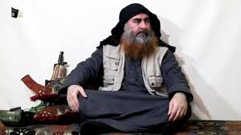

트럼프 대통령은 이날 백악관에서 기자회견을 열고 “전날 밤 미국은 세계 최악 테러 지도자에 대한 정의를 구현했다”며 “그는 가장 무자비하고 폭력적인 테러조직 IS의 창시자였고 미국은 오랜 시간 그를 추적했다”고 말했다. 이어서 트럼프 대통령은 “그를 잡는 일은 미 정부의 최우선 국가 안보 과제였다” 고 말했다.

무장 테러 단체 이슬람국가(IS)의 수괴 아부 바크르 알바그다디가 미군의 공격에 사망하면서 중동 정세와 테러 단체의 향후 행보에 관심이 쏠리고 있다. 다만 IS의 홍보 매체인 알아마크는 올해 8월 알바그다디가 압둘라 카르다시를 자신의 후계자로 지목했다고 보도했다. 터키 아나돌루 통신은 카르다시는 투르크족 출신의 이라크인으로, 이라크 북부 모술 북쪽 국경도시 탈아파르가 고향이라고 전했다. 카르다시는 2003년 미군의 이라크 내 수감 시설에 구금된 경력이 있는 것으로 알려졌다. 특히 종파 간 갈등이 잦은 이라크와 시리아가 IS의 소멸 이후에도 여전히 안정을 찾지 못한다는 점에서 이런 우려가 언제든지 현실이 될 가능성이 있다.
이에 따라 프랑스와 영국은 미국이 급습 작전을 통해 수니파 극단주의 무장세력 ‘이슬람국가’(IS)의 수괴인 아부 바크르 알바그다디를 사살한 데 대해 높이 평가한다면서도 IS가 완전히 격퇴되는 순간까지 싸움을 계속해야 한다고 밝혔다.